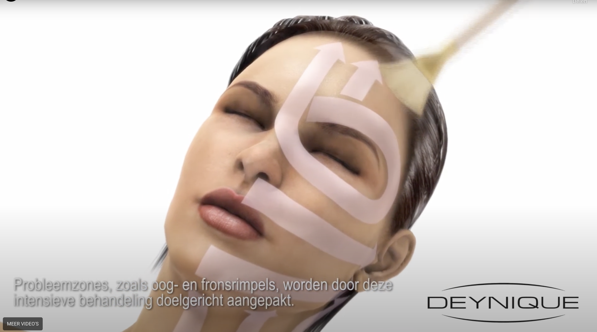
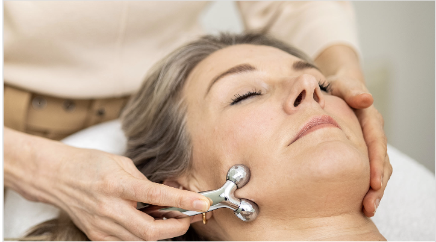

Behandelingen
Wil je graag je huid verbeteren omdat je last hebt van een droge, doffe, onrustige, vermoeide en/of steeds ouder wordende huid? Of wil je preventief zorgen dat je huid zo lang mogelijk in goede conditie is?
Met de juiste verzorgingsproducten, supplementen, leefstijladviezen en behandelingen kan jouw huid zichtbaar verbeteren. Omdat elke huid uniek is, bestaat er geen standaardbehandeling in mijn praktijk. Kom je voor de eerste keer? Dan start de reis naar een betere huid met een Meet & Treat behandeling, waarbij we niet alleen jouw huidwensen bespreken, maar ook jouw huid analyseren om het beste huidadvies aan te kunnen geven. Aansluitend volgt een behandeling aangepast op jouw huidwensen en huidconditie.
Boek een meet en treat-

BIO FACE LIFTING
Deze ontgiftende en liftende behandeling zorgt ervoor dat de dieper gelegen huidlagen worden gereinigd en afvalstoffen worden afgevoerd door de lymfe. Na een behandeling is de huid direct mooier van kleur en structuur
v.a. €89,-
-

SCM BINDWEEFSELMASSAGE
Door verhardingen in het bindweefsel en gespannen gezichtsspieren ziet het gezicht er ouder uit dan het in werkelijkheid is. De SCM massage bewerkstelligt al rollend een keten van activiteit in het bindweefsel. De energie kan weer stromen – gezichtsuitdrukking ontspant.
v.a. €49,-
-

ANTI-TOX
Het doel van anti-tox is een extreem intensieve ontgifting tot in de dieper gelegen huidlagen. Ontgiften is een zeer effectieve manier voor het oplossen van veel huidproblemen. Afvalstoffen worden d.m.v magneten uit de huid getrokken. De huid krijgt weer nieuwe energie.
v.a. €129,-